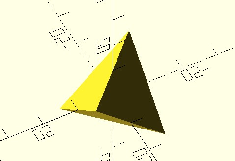

polygon 與 polyhedron
February 27, 2022在〈圖形布林運算〉談過，OpenSCAD 採用的主要建模方式 CSG（Constructive Solid Geometry），將實體模型表示為立方體、圓柱體、球點等基本物體布林操作後的結果，好處是入門簡單，也能應付許多簡單的模型。
不過，複雜模型要完全基於基本物體布林操作來取得結果，有時會有其困難度，或者因為大量的布林操作，導致模型的細緻度不足，或者令預覽渲染的時間極為冗長。
相對來說，掌握頂點與面雖然手續上繁複了一些，而且往往需要實現數學上的一些運算，卻能解決大量布林操作的問題。
使用 polygon
對於自訂 2D 圖形，OpenSCAD 探供了 polygon 模組，可以依序指定多邊形頂點來建立多邊形，順序上順時針或逆時針都可以，，我個人習慣用逆時針，例如，來建立一個簡單的 pie 模組：
module pie(radius, angle_degrees) {
points = [
for(a = [angle_degrees[0]:angle_degrees[1]])
radius * [cos(a), sin(a)]
];
polygon([[0, 0], each points]);
}
pie(10, [45, 135]);
如果只指定多邊形頂點，polygon 會依序使用全部的頂點建立簡單多邊形，以上範例會建立的圖形如下：
polygon 還可以指定 paths 參數，用來指定多個頂點索引路徑，第一組頂點索引路徑會作為主要形狀，第二組以後的頂點索引路徑，都會從主要形狀中進行減集。例如，來建立一個 ring 模組：
module ring(radius, thickness) {
outer = [
for(a = [0:359])
radius * [cos(a), sin(a)]
];
inner_r = radius - thickness;
inner = inner_r / radius * outer;
outer_path = [for(i = [0:359]) i];
inner_path = [for(i = [360:719]) i];
polygon(
points = concat(outer, inner),
paths = [outer_path, inner_path]
);
}
ring(10, 2);
當然，只是要建立 pie 或是 ring 模組，透過交集、減集等的組合也是做得到，以上只是在示範 polygon 的使用，polygon 真正的應用，應該是在於你有特定形狀的公式，想透過程式碼來產生頂點，以建立複雜多邊形之時，例如，你可以試著透過 polygon 來縮製 Superformula 圖形。
polyhedron 多面體
如果想建立多面體，可以使用 polyhedron 模組，指定一組頂點，以及每個面的頂點索引，OpenSCAD 中，朝外的面頂點索引順序必須是順時針（也就是你看向面時，必須以順時針來安排各頂點的順序）。例如，來建立一個正四面體：
module tetrahedron(radius) {
t = (1 + sqrt(5)) / 2;
tetrahedron_points = radius * [
[1, 1, 1], [-1, -1, 1], [-1, 1, -1], [1, -1, -1]
];
tetrahedron_faces = [
[0, 1, 2], [2, 3, 0], [0, 3, 1], [1, 3, 2]
];
polyhedron(
points = tetrahedron_points,
faces = tetrahedron_faces
);
}
tetrahedron(10);
這會建立以下的正四面體：

如果頂點都是共平面，polyhedron 的 faces 可以指定的頂點索引，不一定要是三個一組，也就是不一定要分割為三角面，例如以〈polyhedron〉的範例來說，每組頂點索引就指定了一個四邊形：
CubePoints = [
[ 0, 0, 0 ], //0
[ 10, 0, 0 ], //1
[ 10, 7, 0 ], //2
[ 0, 7, 0 ], //3
[ 0, 0, 5 ], //4
[ 10, 0, 5 ], //5
[ 10, 7, 5 ], //6
[ 0, 7, 5 ]]; //7
CubeFaces = [
[0,1,2,3], // bottom
[4,5,1,0], // front
[7,6,5,4], // top
[5,6,2,1], // right
[6,7,3,2], // back
[7,4,0,3]]; // left
polyhedron( CubePoints, CubeFaces );
這會建立以下的模形：
不過，稍微改一下範例，改一下頂點 6 的 z 值為 7 呢？這麼一來，頂點索引指定的頂點，就不會共平面：
CubePoints = [
[ 0, 0, 0 ], //0
[ 10, 0, 0 ], //1
[ 10, 7, 0 ], //2
[ 0, 7, 0 ], //3
[ 0, 0, 5 ], //4
[ 10, 0, 5 ], //5
[ 10, 7, 7 ], //6
[ 0, 7, 5 ]]; //7
CubeFaces = [
[0,1,2,3], // bottom
[4,5,1,0], // front
[7,6,5,4], // top
[5,6,2,1], // right
[6,7,3,2], // back
[7,4,0,3]]; // left
polyhedron( CubePoints, CubeFaces );
OpenSCAD 會試著重新建構面，還是畫得出來：
不過，你沒辦法掌握面會怎麼被重新建構，而且如果有多個 polyhedron 進行布林運算時，渲染時偶而會有以下的訊息：
PolySet has nonplanar faces. Attempting alternate construction
因此，我個人偏好使用三角形來定義面，因為三點一定共面，而且可以掌握更多的細節。
實作函式圖形
如果有個函式 f(x, y)，給定 x 與 y 的範圍，將之繪製成模型並列印出來，那麼數學函式就不再只是平面上的圖形，而可以是摸得到的實體，那麼數學會不會比較有趣一些？
在每個 [x, y, f(x, y)] 處放上一個小方塊是最簡單的方式，只要方塊夠小，就可以呈現出函式的圖形樣貌，程式也是簡單易懂：
function f(x, y) = (y ^ 2) / 4 - (x ^ 2) / 4;
min_value = -3;
max_value = 3;
resolution = 0.5;
thickness = 1;
for(x = [min_value:resolution:max_value]) {
for(y = [min_value:resolution:max_value]) {
translate([x, y, f(x, y)])
linear_extrude(thickness, center = true)
square(resolution, center = true);
}
}
這會建立以下的模型：
resolution 決定了 x 與 y 的步進值，值越小函式圖案就越細緻，然而，預覽或渲染的時間就會越久，模型的檔案容量也會越大，resolution = 0.05 的圖案，預覽就得花上一段時間，而且感覺還是不夠平滑：
想要更平滑的話，需要更小的 resolution，然而可能發生警訊：
WARNING: Normalized tree is growing past 200000 elements. Aborting normalization.
OpenSCAD 預設最高可處理元素為 100000，超過的話代表模型太複雜，會產生以上警訊，雖然可以在選單的「編輯／偏好／進階」中，設定「關閉渲染於」的值來提高這個上限：
不過不建議採取這樣的動作，因為模型太複雜，不僅預覽變慢，渲染的負擔也會加重，你的電腦可能記憶體不足，或者算到天荒地老…XD
對於函式這類的圖形，如果 x、y 是固定遞增，切割三角形就很容易。例如有以下的點：
那麼每個點往右與往右上各取一個點，就可以構成三角形：
然後，每個點往右上與往上各取一個點，也可以構成三角形：
這樣就處理完一個方格了，接著就是重複處理每個方格：
因此，對於每個 [x, y, f(x, y)] 點，現在劃分為數個三角形了，對於每個三角形，可以簡單地令 f(x, y) 下降一個厚度值，就可以使用 polyhedron 畫出一個多面體：
剩下的就是留意頂點索引順序的問題了，來看看以下的程式碼：
function f(x, y) = (y ^ 2) / 4 - (x ^ 2) / 4;
min_value = -3;
max_value = 3;
resolution = 0.5;
thickness = 1;
points = [
for(y = [min_value:resolution:max_value])
[
for(x = [min_value:resolution:max_value])
[x, y, f(x, y)]
]
];
faces = [
[0, 1, 2],
[3, 4, 5],
[0, 5, 4, 1],
[0, 2, 3, 5],
[1, 4, 3, 2]
];
z_offset = [0, 0, -thickness];
for(yi = [0:len(points) - 2]) {
for(xi = [0:len(points[yi]) - 2]) {
tri1_top = [
points[yi][xi],
points[yi + 1][xi + 1],
points[yi][xi + 1]
];
tri1_bottom = [
tri1_top[2] + z_offset,
tri1_top[1] + z_offset,
tri1_top[0] + z_offset
];
tri2_top = [
points[yi][xi],
points[yi + 1][xi],
points[yi + 1][xi + 1]
];
tri2_bottom = [
tri2_top[2] + z_offset,
tri2_top[1] + z_offset,
tri2_top[0] + z_offset
];
polyhedron(
points = concat(tri1_top, tri1_bottom),
faces = faces
);
polyhedron(
points = concat(tri2_top, tri2_bottom),
faces = faces
);
}
}
這會畫出以下的模型，可以看到，就算 resolution 設為 0.5，畫出來也是蠻平滑的：
不過，這只是簡單建立曲面的方式，還有改進的空間，例如，若每上下一個三角形建立一個多面體，最後會需要將這些多面體聯集起來，其實可以建立整個上曲面與下曲面，然後建立上下曲面外圍的四個邊頂點索引，這樣就不會發生聯集；另外，還可以計算曲面上各頂點的法向量，作為厚度計算時的方向考量等，這就需要比較多數學了，你可以自行挑戰看看。